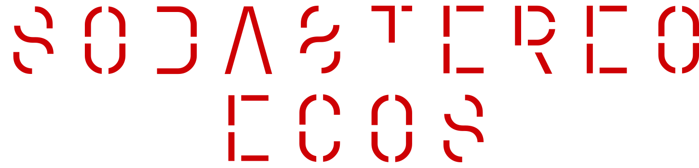

Hay conciertos que no se escuchan: se habitan.
Momentos que se graban en la piel y permanecen en la memoria con sus propios latidos.
Para millones de personas, Soda Stereo es más que música. Es una conexión colectiva que no reconoce fronteras ni edades. No alcanza con reproducir una canción o mirar la luz de una pantalla. El verdadero encuentro ocurre frente al escenario: es ahí donde la música trasciende y se convierte en identidad compartida.
La banda que nunca se fue, la que marcó la historia del rock en español y que une generaciones enteras a través de sus canciones, hará vibrar a sus fans en un espectáculo que trasciende el tiempo.
Como si el ayer, el hoy y el mañana se plegaran en un acorde. Gustavo, Charly y Zeta se reencuentran gracias a la tecnología en un presente que no conoce de fronteras.